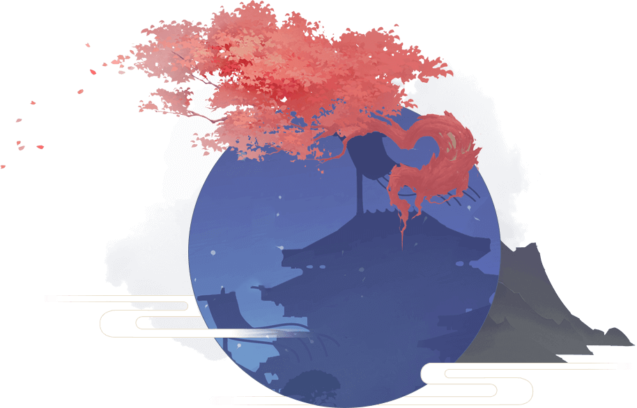
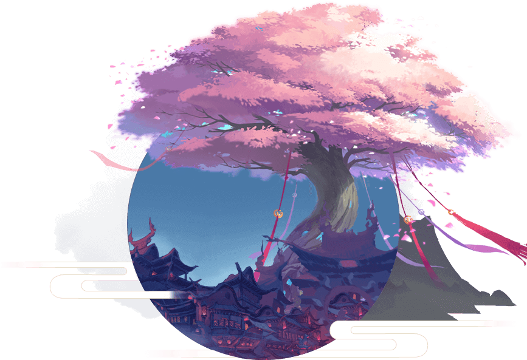
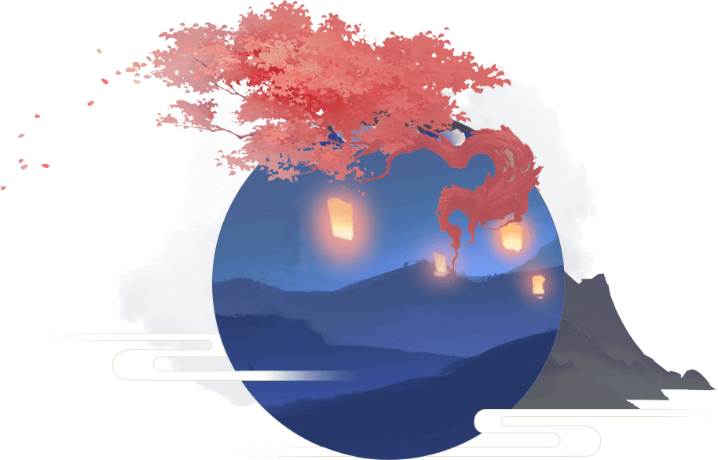
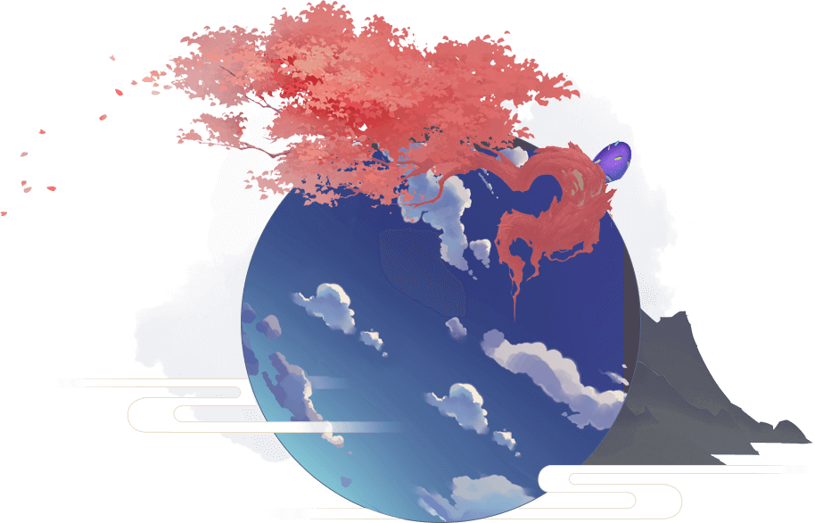
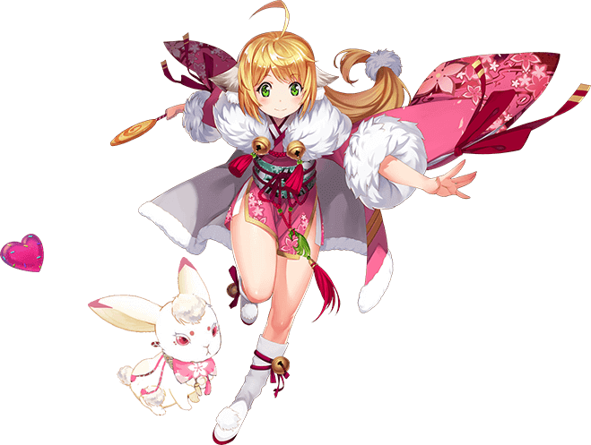
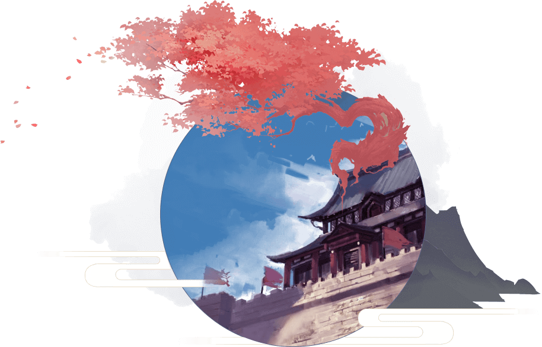

很久以前，人和妖是同时期诞生的。人自认为是万物之灵，而妖也认为自己是天生灵物。人类将妖怪看作野兽，妖怪也把人类看作动物，所以难免发生争端。随后，人类发现自己打不过妖怪，全力以赴的妖发现自己身上有一种神秘力量。人们称之为妖力。这时候遇见妖怪，人类只能落荒而逃。不过，人们发现了能够抗击妖怪的东西——法宝。人类可以此抗击妖怪。而为了各自的利益，人和妖进入了全面的交战时代，天下一片腥风血雨。后来，妖界和人界各出现了一位领袖，他们认识到两界早已厌倦这种毫无意义的战斗。于是排除万难，促使人、妖两界结成了一个和平联盟，人类和妖怪终于和平共处。主要讲述了以红娘为职业的狐妖在为前世恋人牵红线过程当中发生的一系列有趣、神秘的故事。

狐妖一族自古以来的住所。是被山岳和湖泊包围的美丽城市，在城市中心，耸立着巨树“苦情树”，绽放像蒲公英一样的花。没人知道其来历。拥有特殊的神力可辅助狐妖修炼。与涂山狐妖特别是折耳狐有独特的感应力。人与妖在苦情树下起誓，借助涂山狐妖的妖力，能在转世之后续缘。住在这里的狐妖一族因有众多红线仙而广为人知，有来自各地的人类和妖怪为了得到续缘服务而来到这里。

转世续缘又称“再续前缘”，作为涂山法术兼主打服务。转世续缘的方式是人与妖共同向苦情树起誓，以妖和人相爱的记忆和部分妖力为祭品，封入自己的法宝中，再借狐妖之力把此法宝一分为二，人类手持半个法宝死去，法宝就会随人的灵魂一起轮回转世，转世的人会带着半个法宝出生，出生之后，借助狐妖的道具和力量帮助，让人和妖恢复前世的记忆，达成连理。再世续缘的人每次转世只能易姓不得易名。若是二者相悦，便能成功再世续缘。若是失败，妖则此生无望，只待来生，签下“此生无缘”合同，宣布不再打扰此世人类的生活。

涂山一族有一套完善的培训体系，帮助族人系统地学习红线仙所需要的知识。经过了培训后，新人红线仙就可以去专门的零散缘分任务发布处接任务了。而新人红线仙，需要连续成功两个零散缘分任务后，才能升职为正牌红线仙。我们的女主涂山苏苏为了成为红线仙可是煞费苦心，用心学习知识和法术：虽然法术低微，而且人有点傻傻的，但是成为红线仙确实苏苏的梦想。


传说在一千多年以前，所有修道之人成立了一个前所未有的强大联盟，就叫一气道盟，是人类国度的守护神，这个联盟一直存在至今，长盛不衰，内里人才济济，具有非凡的社会地位和财力，其中又以王、李、张三家最强最富有，百年前的盟主为东方月初，现任管理者为王富贵的父亲。